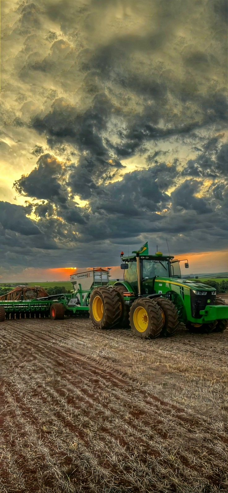
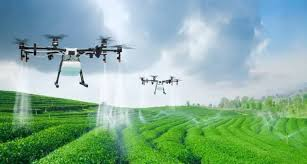
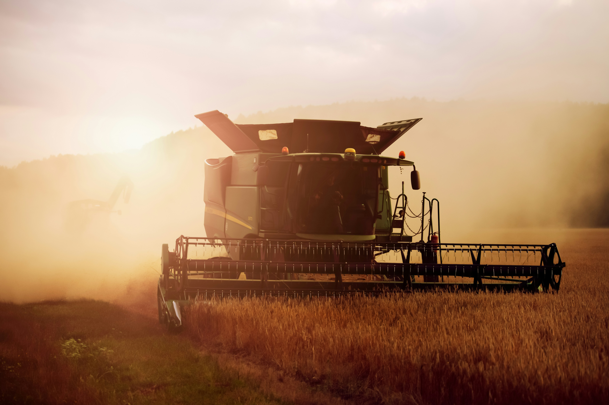

Festejando a Conexão Campo-Cidade

O Agrinho 2025 celebra a crescente união entre o campo e a cidade. O agronegócio tem mostrado que a conexão entre esses dois mundos é essencial para a prosperidade da sociedade moderna. Ele não apenas abastece as cidades com alimentos frescos e sustentáveis, mas também cria oportunidades de emprego e fomenta a inovação no meio urbano. Este evento celebra a força dessa parceria e suas infinitas possibilidades para o futuro, com destaque para a sustentabilidade e as novas tecnologias que tornam essa integração cada vez mais forte.

Os avanços tecnológicos, como o uso de drones na agricultura, são essenciais para a revolução no agronegócio. Em 2025, estamos testemunhando uma transformação na forma como o campo e a cidade se conectam através da tecnologia, proporcionando mais eficiência, sustentabilidade e precisão. Os drones são ferramentas poderosas que permitem monitoramento remoto das plantações, análise de solo, controle de irrigação, e muito mais, tornando o trabalho no campo mais inteligente e produtivo.

A irrigação é uma das práticas agrícolas mais beneficiadas pelo uso da tecnologia. Em 2025, sensores, drones e inteligência artificial permitem uma irrigação mais precisa, sustentável e econômica. Essa inovação garante que a água seja utilizada de forma eficiente, evitando desperdícios e aumentando a produtividade do solo.